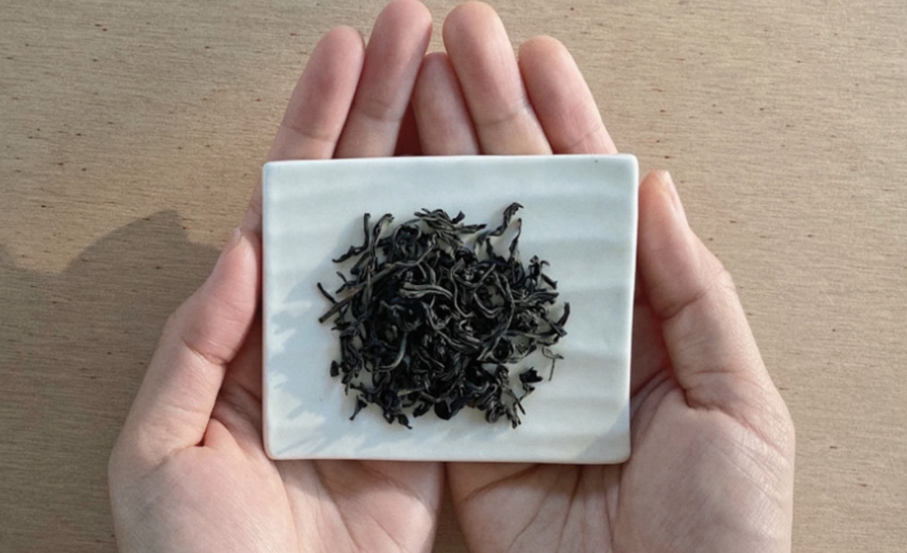
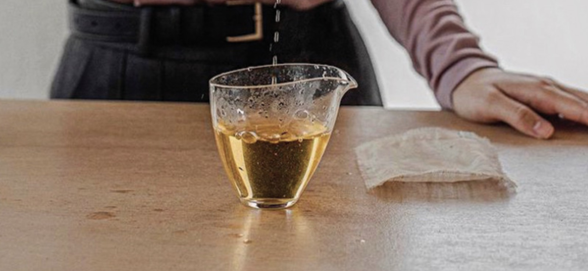
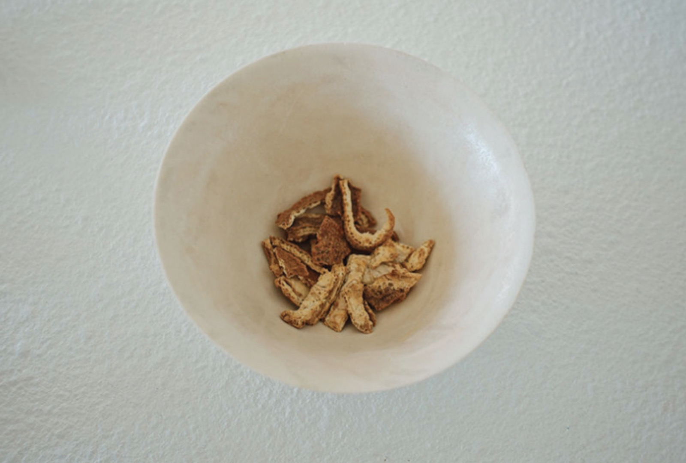
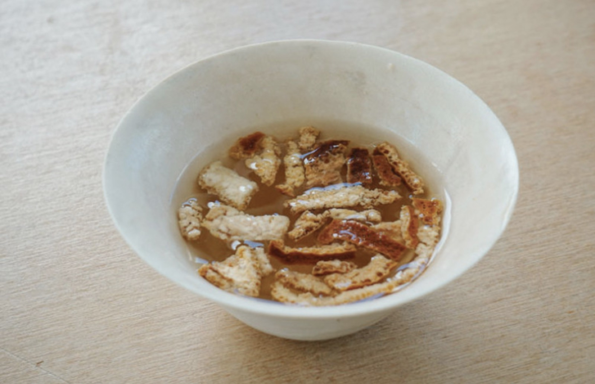
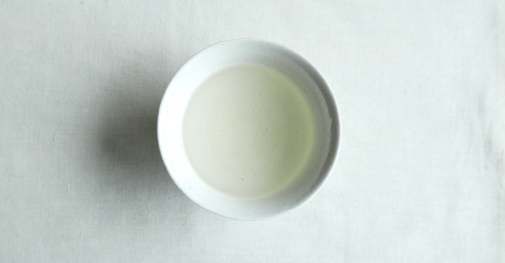
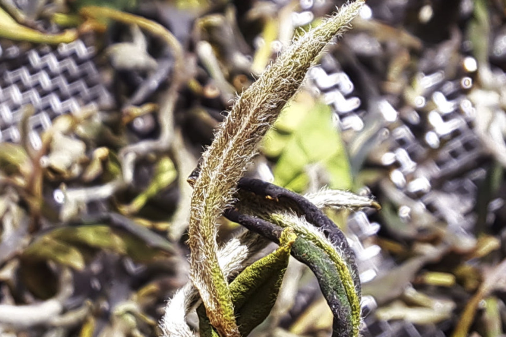
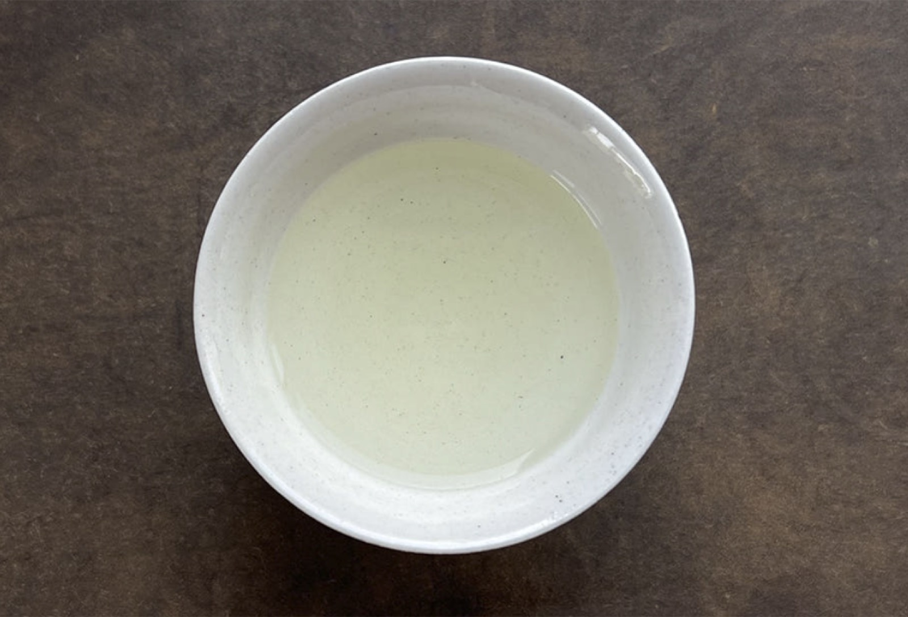
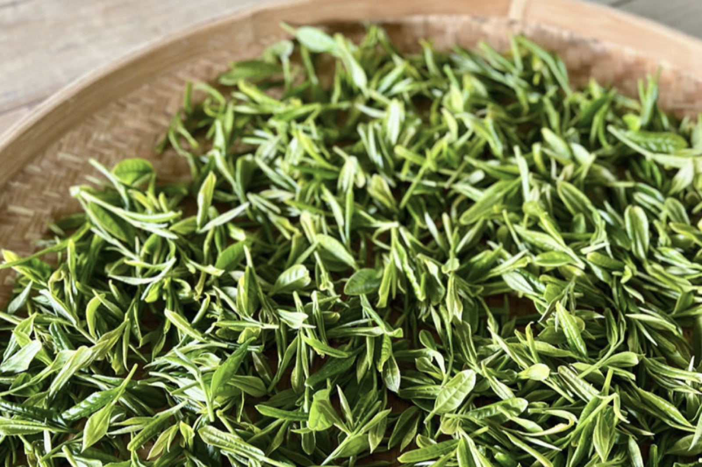

설다연 26년 1학기의 마지막 정기다회
지난 6개월이라는 시간 동안 설다연과 함께 발걸음을 맞춰주신 여러분께 정말 감사드려요.
마지막을 장식하는 뜻깊은 자리에 귀한 걸음 해주셔서 더욱 감동입니다.
더운 여름날 가볍고 시원하게 즐기기 딱 좋은 녹차와 백차를 정성껏 골라보았으니,
오늘만큼은 일상의 더위를 식히며 편안하게 즐겨주세요.
다음 학기에도 이 좋은 인연이 쭉 이어졌으면 좋겠습니다.
모두 행복한 시간 되세요!
즐거운 다회를 위한 유의사항
즐거운 다회를 즐기기 위해서 다음 수칙들을 한번씩 읽어주세요.
언제든지 필요한 것이 있으시다면 주변의 운영진을 찾아주시면 언제든 기쁜 마음으로 도와드립니다.
언제든지 필요한 것이 있으시다면 주변의 운영진을 찾아주시면 언제든 기쁜 마음으로 도와드립니다.
뜨거운 물을 조심해주세요!
뜨거운 물이 항상 함께하기 때문에 혹시라도 쏟지 않도록 항상 주의해주세요.
깨지기 쉬운 다구들에 주의해주세요!
찻잔, 개완, 공도배 같은 도구들은 모두 깨지기 쉬워요.
항상 신경써서 조심스럽게 다뤄주세요.
항상 신경써서 조심스럽게 다뤄주세요.
차는 즐거운 마음으로 마실 때 가장 맛있습니다!
소개된 우림법과 같은 정석적인 방법들에 너무 얽매이실 필요 없습니다.
좋은 사람들과 웃으며 즐기는 차가 제일 맛있습니다!
항상 가볍고 즐거운 마음으로 즐겨주세요.
좋은 사람들과 웃으며 즐기는 차가 제일 맛있습니다!
항상 가볍고 즐거운 마음으로 즐겨주세요.
01
다도레 어린잎 잭살차
녹차명장의 25년 노하우가 담긴 하동 발효차

지리산 고지대에 자생하는 어린 찻잎을 여러 차례 비비고 말린 후, 장작불로 뜨끈하게 데운 황토방에서 하루 내 뭉근히 발효시킨 귀한 발효차입니다.
녹차명장의 25년 노하우로 완성한 특별한 풍미로, 호박엿을 연상시키는 진득한 단맛과 부드러운 감칠맛이 특징입니다.
녹차명장의 25년 노하우로 완성한 특별한 풍미로, 호박엿을 연상시키는 진득한 단맛과 부드러운 감칠맛이 특징입니다.

호박엿을 닮은 진득한 단미
'24시간 황토방 숙성이 빚어낸 풍미'
'작설차'의 경상도 방언인 잭살차는 참새의 혀처럼 잘잘한 잎으로 만든 차라는 뜻입니다. 하동의 전통 발효 방식으로 만들어 녹차보다는 달큰하고 고소하며, 홍차보다는 풋풋하고 은은합니다. 초봄 어린 찻잎으로 만들어 부드러운 단맛과 감칠맛 뒤로 풀내음과 은은한 꽃향이 남는, 누구나 좋아할 만한 가장 한국적인 차입니다.
'24시간 황토방 숙성이 빚어낸 풍미'
'작설차'의 경상도 방언인 잭살차는 참새의 혀처럼 잘잘한 잎으로 만든 차라는 뜻입니다. 하동의 전통 발효 방식으로 만들어 녹차보다는 달큰하고 고소하며, 홍차보다는 풋풋하고 은은합니다. 초봄 어린 찻잎으로 만들어 부드러운 단맛과 감칠맛 뒤로 풀내음과 은은한 꽃향이 남는, 누구나 좋아할 만한 가장 한국적인 차입니다.
90°C
150ml
25초
차 우림법
녹차와 홍차의 중간쯤 되는 반발효차인 만큼 뜨거운 물로 편안하게 우려도 부담이 없습니다. 몸을 따뜻하게 하고 소화를 돕는 하루 한 잔의 천연 감기약으로도 즐겨보세요.
녹차와 홍차의 중간쯤 되는 반발효차인 만큼 뜨거운 물로 편안하게 우려도 부담이 없습니다. 몸을 따뜻하게 하고 소화를 돕는 하루 한 잔의 천연 감기약으로도 즐겨보세요.
02
다도레 제주 귤피차
9번 덖고 말린 논카페인 건강차

영양 가득한 제주 노지귤의 껍질을 깨끗이 세척해 가마솥에 9번 덖고 말리는 정성으로 만든 논카페인 차입니다.
과육과 달리 산미가 없고 은은한 단맛과 고소함, 부드러운 감칠맛이 특징이며, 비타민C·베타카로틴·리모넨 등 풍부한 영양 성분을 담고 있습니다.
과육과 달리 산미가 없고 은은한 단맛과 고소함, 부드러운 감칠맛이 특징이며, 비타민C·베타카로틴·리모넨 등 풍부한 영양 성분을 담고 있습니다.

귤 과육보다 4배 높은 비타민C
'카페인 걱정 없는 모두를 위한 건강차'
단순히 건조해 만든 차와는 차원이 다른 깊은 맛과 향을 지녔습니다. 내포성이 좋아 뜨거운 물을 붓자마자 빠르게 우러나고, 여러 번 우려도 맛과 향이 오래 유지되는 가성비 좋은 차예요. 고급스럽고 은은한 귤의 단향과 부드러운 고소함을, 카페인 걱정 없이 데일리로 즐겨보세요. 몸을 따뜻하게 해주어 감기 예방과 피로 회복에도 좋은 차입니다.
'카페인 걱정 없는 모두를 위한 건강차'
단순히 건조해 만든 차와는 차원이 다른 깊은 맛과 향을 지녔습니다. 내포성이 좋아 뜨거운 물을 붓자마자 빠르게 우러나고, 여러 번 우려도 맛과 향이 오래 유지되는 가성비 좋은 차예요. 고급스럽고 은은한 귤의 단향과 부드러운 고소함을, 카페인 걱정 없이 데일리로 즐겨보세요. 몸을 따뜻하게 해주어 감기 예방과 피로 회복에도 좋은 차입니다.
100°C
200ml
10초
차 우림법
내포성이 매우 좋아 뜨거운 물을 붓자마자 금방 우러납니다. 진하게 우려도 부담이 없고, 여러 번 우려 마셔도 향이 오래갑니다.
내포성이 매우 좋아 뜨거운 물을 붓자마자 금방 우러납니다. 진하게 우려도 부담이 없고, 여러 번 우려 마셔도 향이 오래갑니다.
03
휴심 백차
농익은 과일향이 매력적인 중작급 백차

4월 말부터 5월 중순까지 채엽하여 만든 중작급 백차입니다.
약발효 방식으로 만들어 풋과일향과 다채롭고 신선한 향미를 지녔으며, 발효도가 높아 농익은 과일향과 풍부한 구감이 느껴집니다.
약발효 방식으로 만들어 풋과일향과 다채롭고 신선한 향미를 지녔으며, 발효도가 높아 농익은 과일향과 풍부한 구감이 느껴집니다.

농익은 과일향과 풍부한 구감
'깊게 발효시킨 중작 백차의 매력'
중작은 찻잎이 모두 펴지고 세작보다 더 자란 상태에서 채엽한 잎을 말합니다. 휴심 백차는 이 중작급 잎을 깊게 발효시켜 만들어, 높은 발효도에서 오는 진하고 풍부한 향과 농익은 과일향을 함께 느낄 수 있습니다.
'깊게 발효시킨 중작 백차의 매력'
중작은 찻잎이 모두 펴지고 세작보다 더 자란 상태에서 채엽한 잎을 말합니다. 휴심 백차는 이 중작급 잎을 깊게 발효시켜 만들어, 높은 발효도에서 오는 진하고 풍부한 향과 농익은 과일향을 함께 느낄 수 있습니다.
85°C
150ml
20초
차 우림법
너무 높은 온도로 오래 우리면 잎이 익어 향이 무뎌질 수 있어요. 우린 직후 따뜻할 때 바로 드시면 은은한 향을 가장 잘 느끼실 수 있습니다.
너무 높은 온도로 오래 우리면 잎이 익어 향이 무뎌질 수 있어요. 우린 직후 따뜻할 때 바로 드시면 은은한 향을 가장 잘 느끼실 수 있습니다.
04
휴심 우전녹차
화개 찻잎으로 빚은 고소한 덖음차

4월 20일, 화개에서 채엽한 찻잎으로 만든 우전 녹차입니다.
살청기로 아홉 번 덖고 고온 열처리하는 과정을 24시간에 걸쳐 정성껏 거쳐, 대중적인 덖음맛(고소한 풍미) 뒤로 은은한 차향이 길게 남습니다.
살청기로 아홉 번 덖고 고온 열처리하는 과정을 24시간에 걸쳐 정성껏 거쳐, 대중적인 덖음맛(고소한 풍미) 뒤로 은은한 차향이 길게 남습니다.

아홉 번 덖어낸 고소한 뒷맛
'쌉쌀한 향미가 더하는 차의 깊이'
고온에서 수차례 덖는 과정에서 생긴 차향이 오래도록 은은하게 남고, 쌉쌀한 약한 고미가 차의 깊이를 더합니다. 24시간 동안 정성 들여 만들어 뒷맛이 깔끔한 것이 특징입니다.
'쌉쌀한 향미가 더하는 차의 깊이'
고온에서 수차례 덖는 과정에서 생긴 차향이 오래도록 은은하게 남고, 쌉쌀한 약한 고미가 차의 깊이를 더합니다. 24시간 동안 정성 들여 만들어 뒷맛이 깔끔한 것이 특징입니다.
75°C
100ml
40초
차 우림법
열탕으로 우려도 무방하니 드셔보시고 취향에 맞게 물 온도와 시간을 조절해보세요. 낮은 온도로 우리면 은은하고 부드럽게, 뜨거운 물로 빠르게 우리면 진하고 고소하게 즐길 수 있습니다.
열탕으로 우려도 무방하니 드셔보시고 취향에 맞게 물 온도와 시간을 조절해보세요. 낮은 온도로 우리면 은은하고 부드럽게, 뜨거운 물로 빠르게 우리면 진하고 고소하게 즐길 수 있습니다.